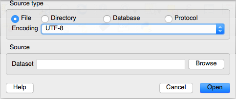
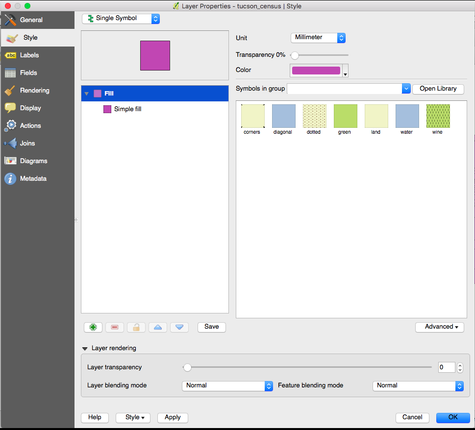
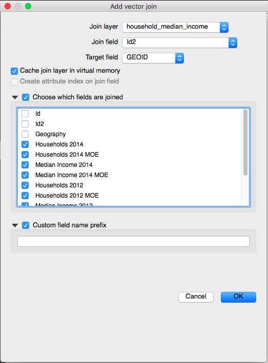
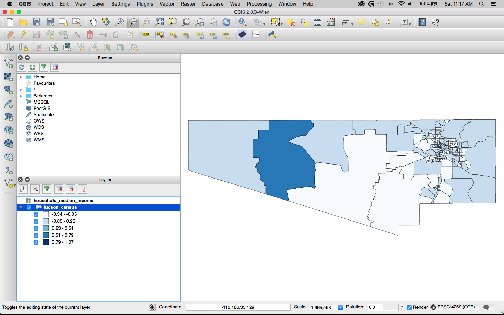

Working with QGIS
Eric Sagara
Reveal / Center for Investigative Reportingesagara@cironline.org | @esagara
A quick tour of qgis
A blank map
The map pane
This is where your map will be displayedMap information
Projection and scale along with other infoThe browser pane
Here you can navigate to your dataThe layers pane
Here is where QGIS displays what layers you have on your mapThe add layers toolbar
Here is where you add new layersOther tools
Select, pan and zoom, among othersBuilding a map
Adding a layer

And we have a map
Exploring what we have so far
This layer is basically a feature collection. Each individual polygon within it is known as a feature. Let's explore a feature.
 in the top toolbar to bring up the Identify Features Tool. Click on a feature within the map.
in the top toolbar to bring up the Identify Features Tool. Click on a feature within the map.
Styling the layer
In the layers pane, right click on the tucson_census layer and select "Properties" to bring up information about the layer.
Clicking on the General tab brings up information about the layer, including its Coordinate Reference System (more about that later).
The Metadata tab contains more detailed information about the dataset, including some more geographic information.
The labels tab allows us to set how the individual features in the layer are labeled. We often handle labeling outside of QGIS, so we are going to skip this.
The style tab allows us to color and set borders on the features within the layer.
Clicking the Simple Fill button brings up a dialog box allowing us to set the color and border of the features.
Joining data to the layer
Adding a CSV file
An important note:
QGIS automatically interpets all numbers as integers when it imports a CSV file. This can be problematic when you have a number with a leading zero that you need to preserve because integers strip those out.
The solution
The solution is to create a separate file similar to a CSV but with only one row. This file is saved as a .csvt file with the same name as your CSV file. In this case it would be household_median_income.csvt.
The single row contains a comma-separated list of the data types (encapsulated in quotes) for each column.
Joining the two layers

Coloring our new map
A few quick notes
You can change the number of categories you want to display by changing "Classes" to the prefered number. However large amounts of classes tend to dilute the analysis while smaller amounts obscure results.
You can also change how QGIS calculates where to split up the categories under the "Mode" option. There is a lot of math behind some of these choices and they have specific use cases. Research these options before using them.
The finished map
Saving your work
Aside from saving the entire project, you can also export your tucson_census to a new file containing the joined data.
To save to shapefile
Saving to KML
Save your map to this format if you plan to use it online with Google Fusion Tables, Google Earth or most other online programs.
Congratulations!
You've created your first map
This presentation and other handouts can be found online at https://github.com/newshackaz/gis-for-journalists